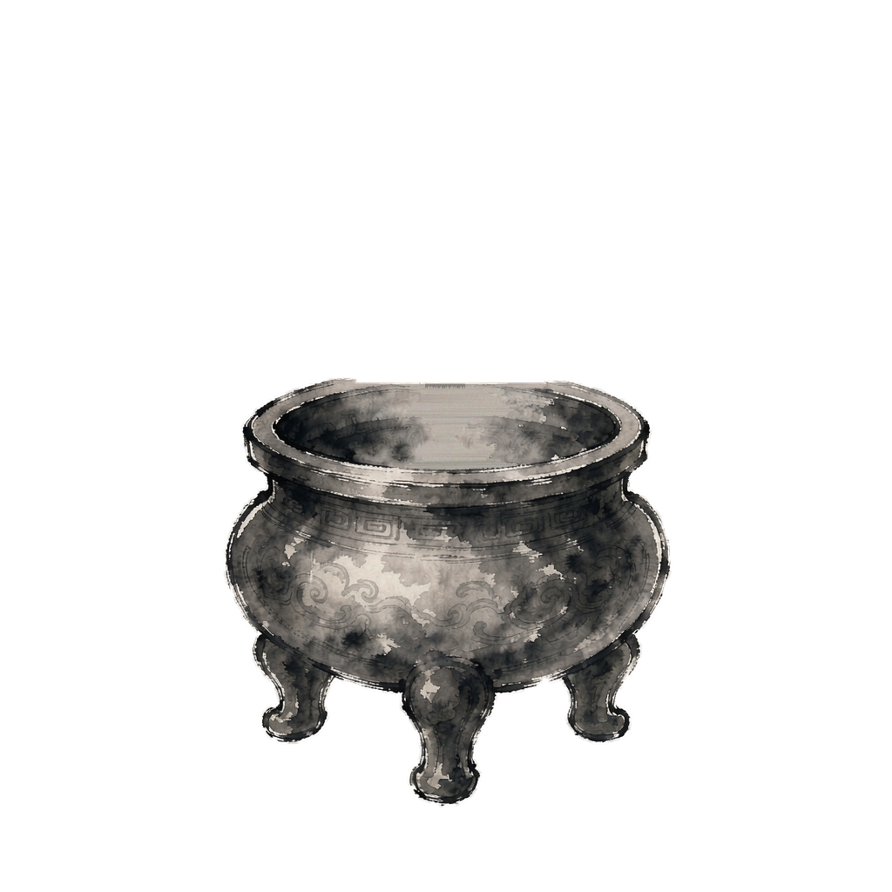

两张 1024×1024 素材按原坐标直接叠合（先 shadow 后 body）。之后香支素材插在炉口椭圆中心偏下位置（约 x 50%，y 47%）。

宣纸底色（亮色网页）
暗色网页
透明棋盘格（验证 Alpha）
<div class="burner">
<img src="incense-shadow.png" class="shadow">
<img src="incense-body.png" class="body">
<!-- 香支素材插在这里，绝对定位到炉口 -->
</div>